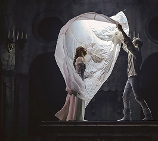
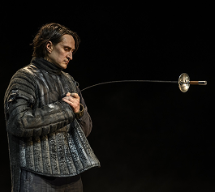
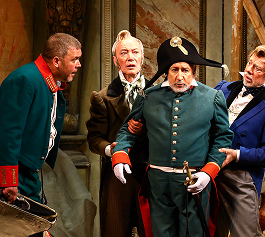
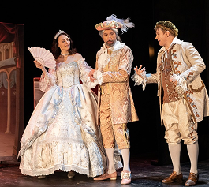
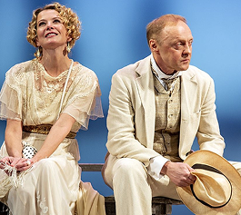
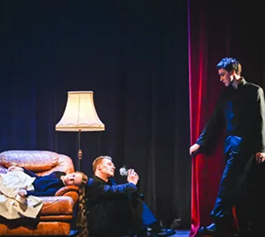

Ромео и Джульетта
История двух влюблённых, которым приходится бороться за своё чувство вопреки всему миру. Страсть, нежность и трагедия, которая не оставляет равнодушным.

Настроение: любовь, переживания, романтика.
У каждого свой театр. Одни приходят за яркими эмоциями, другие — за лёгкостью и смехом, третьи ищут истории, которые заставляют задуматься.
Мы собрали спектакли для разных характеров, настроений и поводов.
Выберите настроение, и мы подскажем, какой спектакль вам подойдёт
Для тех, кто верит в любовь, красивые истории и сильные чувства.
История двух влюблённых, которым приходится бороться за своё чувство вопреки всему миру. Страсть, нежность и трагедия, которая не оставляет равнодушным.

Настроение: любовь, переживания, романтика.
История человека, который умеет красиво говорить о любви, но боится признаться в собственных чувствах. Остроумие, поэзия и трогательная история о внутренней красоте.

Настроение: нежность, вдохновение, лёгкая грусть.
Для тех, кто хочет от души посмеяться и провести лёгкий вечер.
Городские чиновники принимают случайного гостя за важного проверяющего. Попытки скрыть беспорядок только добавляют путаницы.

Настроение: сатира, суета, веселье.
Находчивый Труффальдино нанимается сразу к двум хозяевам и делает всё, чтобы они об этом не узнали.

Настроение: лёгкость, азарт, смех.
Для тех, кому хочется подумать о выборе, переменах и времени.
Семья рискует потерять родовое имение. Пока одни держатся за воспоминания, другие уже строят планы на будущее.

Настроение: ностальгия, перемены, размышления.
Датский принц пытается разобраться в смерти отца и решить, как поступить с правдой, которая меняет его жизнь.

Настроение: сомнение, напряжение, размышления.
Расскажите нам о своём настроении, а мы поможем найти спектакль, который сделает ваш вечер особенным.